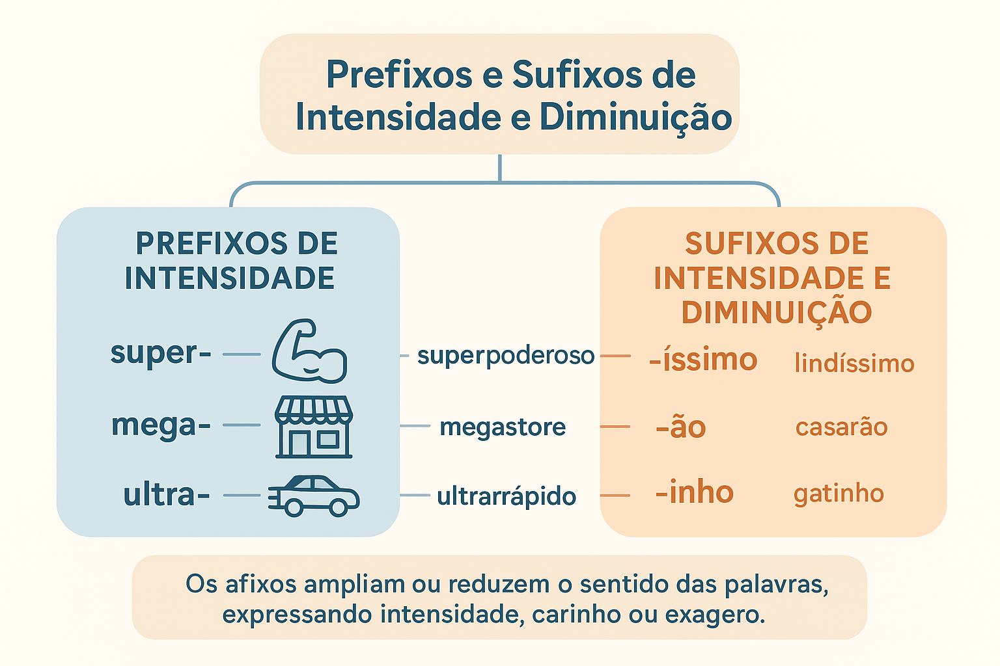

Prefixos e Sufixos de Intensidade e Diminuição
A expressividade de uma língua não se mede apenas pela quantidade de palavras registradas em seus dicionários, mas pela flexibilidade com que seus falantes modulam os sentidos dessas palavras. No cotidiano da comunicação, raramente nos limitamos a declarar que algo é simplesmente "grande", "pequeno", "bom" ou "ruim". A linguagem humana exige gradações refinadas, ênfases emocionais, atenuações irônicas e intensificações que traduzem com exatidão o ponto de vista de quem fala.
No sistema morfológico da Língua Portuguesa, essa modulação de grandeza, força e afeto é operada com primazia pelos afixos de intensidade e diminuição. Ao se acoplarem aos radicais, os prefixos (de matriz grega ou latina) e os sufixos (avaliativos e de grau) não apenas alteram a escala dimensional dos seres, mas constroem complexos efeitos de sentido pragmáticos no discurso publicitário, literário e coloquial.
Neste guia completo e didático, você explorará a morfologia dos afixos intensificadores e diminutivos, as regras do Novo Acordo Ortográfico quanto ao uso do hífen com prefixos graduais, a diferença decisiva entre valor referencial e valor emotivo (carinho versus pejoratividade), além de quadros comparativos e questões comentadas para fixação.

Afixos avaliativos: morfemas de escala e perspectiva
Na morfologia descritiva, os afixos que expressam intensidade, aumento ou diminuição integram a categoria dos afixos apreciativos ou avaliativos. Diferentemente dos afixos estritamente gramaticais, eles expressam um juízo de valor ou uma quantificação relativa em relação a uma norma padrão presumida pelo falante:
- Escala dimensional ou quantitativa (valor referencial): denota o tamanho físico mensurável ou a proporção matemática do objeto (ex.: minissaia = saia de tamanho reduzido; microcomputador = computador de proporção pequena);
- Escala expressiva ou subjetiva (valor discursivo/pragmático): manifesta a atitude afetiva, irônica, laudatória ou depreciativa do enunciador em relação ao referente (ex.: amigão = grande amigo pelo laço afetivo; poeminha = poema de pouca relevância sob ótica desdenhosa).
A função estilística dos afixos graduais
“Os afixos aumentativos e diminutivos ultrapassam a mera notação métrica de tamanho. Eles constituem poderosos operadores de modalização afetiva, pelos quais o falante impregna a palavra de simpatia, desdém, ironia ou ênfase enfática” (BECHARA, 2019, p. 358).
1. Prefixos de intensidade e dimensão
Os prefixos atuam antes do radical. Na Língua Portuguesa, grande parte dos prefixos que expressam grau, grandeza, ápice ou intensidade provém de étimos gregos e latinos, sendo amplamente mobilizados pelo jornalismo contemporâneo e pela linguagem publicitária para criar hipérboles e destacar atributos:
1.1 Prefixos de Intensidade e Superioridade (Aumento)
Matriz Latina
super- / sobre- : ideia de excesso, superioridade ou ápice.
• superinteressante, superlotado, superpotência, sobrecarga.
ultra- : ideia de além do limite ou extremo.
• ultrarrápido, ultraleve, ultrassom, ultramoderno.
extra- : além de, em grau superior extraordinário.
• extragrande, extraoficial, extrafino.
Matriz Grega
hiper- : quantidade ou intensidade muito além do normal.
• hiperativo, hipertenso, hipersensível, hiperinflação.
mega- / megalo- : grandeza física ou proporção colossal.
• megaprojeto, megastore, megashow, megalomaníaco.
arqui- / arqui- : superioridade hierárquica máxima.
• arqui-inimigo, arquimilionário, arquidiocese.
1.2 Prefixos de Atenuação e Diminuição
Indicam tamanho reduzido, posição de inferioridade estrutural, escassez ou ação incompleta:
- mini- (latim): forma reduzida ou versão compacta de algo (minissaia, minigolfe, minidicionário, minicurso);
- micro- (grego): escala microscópica ou dimensão extraordinariamente pequena (microempresa, micro-ondas, microcosmo, microorganismo);
- nano- (grego): escala atômica ou bilionésima parte (nanotecnologia, nanosegundo);
- sub- / hipo- (latim/grego): posição inferior ou grau abaixo da média (subnutrido, subdesenvolvido, hipotenso, hipocrisia);
- semi- / hemi- (latim/grego): metade, divisão ou estágio intermediário incompleto (semicírculo, semiaberto, hemisfério).
Atenção ao Acordo Ortográfico com prefixos de intensidade
Com os prefixos super- e hiper-, utiliza-se hífen apenas se a palavra seguinte iniciar por h ou r (ex.: super-homem, super-resistente; mas superlotado, superinteressante). Com ultra-, mega- e mini-, usa-se hífen diante de h ou vogal idêntica (ex.: micro-ondas, mini-hotel); diante de r ou s, essas consoantes são duplicadas (ex.: ultrarrápido, minissaia, megarrico).
2. Sufixos avaliativos de intensidade e diminuição
Ao contrário dos prefixos, que operam em composições lexicais de base científica e discursiva, os sufixos são historicamente enraizados no cerne da língua popular e literária, constituindo as formas sintéticas das variações de grau do substantivo e do adjetivo.
2.1 Sufixos Aumentativos e Intensificadores
Agregam-se ao radical nominal para exprimir grandiosidade material ou intensificação enfática:
- -ão / -zão: o sufixo aumentativo mais prolífico do português (casarão, homenzão, mulherão, vozão);
- -aço / -ázio: exprime grandeza ou intensidade súbita (golaço, ricaço, barcaça, copázio);
- -alhão / -arrão: aumento com ênfase expressiva e física (grandalhão, homenzarrão, canzarrão);
- -íssimo / -érrimo / -ílimo: sufixos superlativos de intensidade em adjetivos (lindíssimo, felicíssimo, celebérrimo, facílimo).
2.2 Sufixos Diminutivos
Reduzem a dimensão referencial ou expressam a proximidade psicológica do falante com o ser mencionado:
- -inho / -zinho: sufixo diminutivo padrão universal da língua (gatinho, cafezinho, menininha, rapazinho);
- -ete / -ote: diminuição atenuada ou moderada (livrete, filete, rapazote, filhote);
- -eco / -ela / -elho: diminutivos com frequência marcados por valor depreciativo ou rústico (jornaleco, ruela, vilarejo, rapazelho);
- -ucho / -ito: diminuição de sabor afetivo regional ou hispânico (papelito, carrapicho, gorducho).
Valores semânticos e pragmáticos dos diminutivos e aumentativos
Na comunicação viva, a escolha de um sufixo diminutivo ou aumentativo raramente tem como objetivo exclusivo indicar o tamanho físico métrico. O contexto de enunciação determina o verdadeiro valor do afixo:
Efeitos discursivos dos afixos avaliativos no enunciado
- Afeto, ternura e intimidade: “Vem cá, meu filhinho.” / “Aquele é meu amigão do peito.” (o diminutivo e o aumentativo denotam acolhimento e calor humano);
- Ironia, desprezo ou depreciação: “Escreveu um artigozinho sem qualquer rigor acadêmico.” / “Aquele politiqueiro faz promessas vazias.” (desqualificação moral ou técnica do objeto);
- Atenuação e modéstia discursiva: “Gostaria de dar uma palavrinha rápida com o senhor.” / “Fiz um almocinho simples para nós.” (suavização de um pedido para evitar tom impositivo);
- Autonomia lexical e cristalização semântica: o sufixo funde-se de tal modo ao radical que cria um objeto totalmente novo, sem mais denotar tamanho (ex.: cartão não é carta grande; folhinha no sentido de calendário; sombrinha no sentido de guarda-chuva portátil).
Quadro comparativo dos afixos de intensidade e escala
| Tipo de Afixo | Morfema Característico | Sentido Primário | Exemplos de Aplicação |
|---|---|---|---|
| Prefixo Intensificador | super-, hiper-, ultra- | Excesso, ápice ou grau extremo. | superlotado, hiperativo, ultraleve |
| Prefixo Dimensional Maior | mega-, macro- | Grandeza física ou escala institucional. | megaprojeto, macroeconomia |
| Prefixo Dimensional Menor | mini-, micro-, nano- | Dimensão reduzida ou escala microscópica. | minidicionário, microempresa |
| Sufixo Aumentativo | -ão, -zão, -aço, -arrão | Tamanho superior, impacto ou admiração. | casarão, golaço, homenzarrão |
| Sufixo Intensivo (Adjetivo) | -íssimo, -érrimo | Grau superlativo absoluto sintético. | altíssimo, paupérrimo |
| Sufixo Diminutivo Afetivo | -inho, -zinho | Pequenez, carinho ou suavização. | casinha, cafezinho, mãezinha |
| Sufixo Diminutivo Pejorativo | -eco, -elho, -acho | Depreciação, menoscabo ou rusticidade. | jornaleco, rapazelho, riacho |
Exemplo prático de análise de efeitos de sentido
Análise de caso: O vocábulo no texto publicitário e literário
Analise o contraste de sentido nas duas sentenças abaixo:
Enunciado A: “O candidato apresentou um projetinho medíocre para a educação do município.”
Enunciado B: “Comprei uma casinha charmosa na serra para passar as férias com meus filhos.”
Comentário discursivo
No Enunciado A, o sufixo -inho em projetinho atua com função pejorativa e depreciativa. Não indica que o documento tem poucas páginas físicas, mas que sua qualidade intelectual e valor social são ínfimos na avaliação crítica do enunciador.
No Enunciado B, o sufixo -inha em casinha opera com valor afetivo e de aconchego. A intenção não é enfatizar a limitação física do imóvel, mas transmitir uma atmosfera de acolhimento, simplicidade e intimidade familiar.
Questões para estudo e reflexão
Questão 1
Por que linguistas afirmam que o sufixo diminutivo possui tanto valor referencial quanto valor pragmático? Exemplifique.
Ver resposta comentada
Resposta comentada: Porque o sufixo diminutivo pode atuar no plano objetivo-referencial (indicando dimensões métricas físicas reduzidas, como em “um filhote pequenino”) ou no plano pragmático-discursivo (revelando a atitude afetiva, modesta, irônica ou depreciativa do emissor, como em “um almocinho caseiro” [afeto] ou “um livrinho sem valor” [ironia/menosprezo]).
Questão 2
De acordo com o Acordo Ortográfico vigente, em quais condições os prefixos de intensidade super- e ultra- devem receber hífen?
Ver resposta comentada
Resposta comentada: O prefixo super- recebe hífen somente quando a palavra subsequente iniciar pelas letras h ou r (ex.: super-homem, super-resistente; nas demais, une-se diretamente: superfaturado). O prefixo ultra- recebe hífen diante de h ou de vogal idêntica a (ex.: ultra-humano, ultra-avançado); diante de r ou s, não se usa hífen e a consoante é duplicada (ex.: ultrarrápido, ultrassensível).
Questão 3
Qual é a diferença entre a intensidade expressa por via sintética e por via analítica nos adjetivos?
Ver resposta comentada
Resposta comentada: A via sintética expressa o grau superlativo absoluto pela fusão direta de um sufixo mórfico intensificador ao radical latino do adjetivo (ex.: facílimo, altíssimo). A via analítica expressa essa mesma intensidade com o auxílio de um termo externo modificador independente, como um advérbio de intensidade (ex.: muito fácil, extremamente alto).
Questão 4
O que é o fenômeno da cristalização lexical em palavras com sufixos aumentativos e diminutivos? Cite dois exemplos.
Ver resposta comentada
Resposta comentada: É o processo pelo qual um vocábulo originalmente formado por sufixo de grau perde na consciência dos falantes a noção de tamanho e passa a designar um ser ou objeto completamente autônomo no dicionário. Exemplos: cartão (não é uma carta de grandes proporções, mas um instrumento bancário ou papel rígido) e portão (objeto com função arquitetônica própria de entrada de veículos ou imóveis).
Questão 5
Qual o papel da prefixação intensificadora na linguagem da publicidade e dos meios de comunicação?
Ver resposta comentada
Resposta comentada: Prefixos como mega-, super- e ultra- são recursos retóricos que constroem efeitos de grandiosidade, novidade, exclusividade e urgência. Eles capturam a atenção do consumidor ao promover uma hiperbolização dos atributos do produto anunciado (ex.: megaoferta, superdesconto).
Resumo dos Prefixos e Sufixos de Intensidade e Diminuição
- Prefixos e sufixos avaliativos modulam a intensidade, a proporção e a carga emotiva dos vocábulos;
- Prefixos de intensidade (super-, hiper-, ultra-, mega-) expressam excesso, grau extremo e destaque;
- Prefixos de atenuação (mini-, micro-, sub-, semi-) indicam escalas reduzidas ou estágios parciais;
- A regra do hífen exige atenção: duplicam-se 'r' e 's' após vogal (ultrarrápido, minissaia) e usa-se hífen com super- diante de 'h' e 'r';
- Os sufixos aumentativos e diminutivos operam com valor dimensional (tamanho) ou pragmático (carinho, ironia, desprezo);
- Muitas palavras com sufixos de grau sofreram cristalização lexical e tornaram-se novos verbetes independentes no idioma.
Perguntas frequentes sobre afixos de intensidade
Todo aumentativo ou diminutivo indica obrigatoriamente tamanho físico?
Não. Na maioria dos contextos cotidianos e literários, eles expressam a atitude psicológica do falante, variando entre afeto e proximidade (“meu filhinho”) até desdém e desprezo (“um jornaleco sensacionalista”).
Como se escreve corretamente: "super-homem" ou "superhomem"?
Grafa-se super-homem, com hífen. O Acordo Ortográfico determina o emprego obrigatório do hífen sempre que o prefixo super- for seguido de palavra iniciada por 'h' ou 'r' (como em super-resistente).
Qual a diferença entre "magríssimo" e "macérrimo"?
Ambas as formas são superlativos sintéticos eruditos válidos de magro. Macérrimo apoia-se diretamente no étimo latino macer, sendo mais formal e literário; magríssimo é a formação popular regular adaptada ao radical do português moderno.
Por que dizemos que "portão" não é mais um aumentativo vivo?
Porque a palavra sofreu cristalização semântica e tornou-se um substantivo autônomo com verbete próprio no dicionário. Um portão possui características construtivas e funcionais distintas de uma porta grande.
O prefixo "mini-" deve ser grafado com hífen em "minissaia"?
Não. Conforme o Acordo Ortográfico, quando o prefixo terminado em vogal junta-se a uma palavra iniciada por 's' ou 'r', não se usa hífen e a consoante é dobrada: minissaia, minissérie, minirreforma.
Considerações finais
O estudo dos prefixos e sufixos de intensidade e diminuição evidencia a sofisticação da morfologia expressiva na Língua Portuguesa. Longe de serem meros apêndices mecânicos de aumento ou redução de tamanho, esses afixos constituem ferramentas de afinação estilística que conferem cor, tom, proximidade e vigor às frases.
Ao compreender os meandros da prefixação erudita e da sufixação afetiva, o leitor e o escritor dominam os recursos ideais para enriquecer a redação, interpretar textos publicitários e literários com apuro crítico e aplicar as convenções ortográficas vigentes com absoluta segurança.
Conteúdos relacionados
- Introdução à Morfologia: o estudo da forma das palavras
- Estrutura e Formação das Palavras: morfemas, radical, afixos e desinências
- Processos de Formação de Palavras: derivação, composição e outros
- Flexão das Palavras: gênero, número, grau, tempo, modo, pessoa e aspecto
- Classes Morfológicas das Palavras: análise e classificação
- Morfologia: Estrutura, Formação e Classes de Palavras — Índice Geral
- Famílias Lexicais e Relações Morfológicas
Referências
- AZEREDO, José Carlos de. Gramática Houaiss da Língua Portuguesa. 4. ed. São Paulo: Parábola Editorial, 2021.
- BECHARA, Evanildo. Moderna Gramática Portuguesa. 39. ed. Rio de Janeiro: Nova Fronteira, 2019.
- CUNHA, Celso; CINTRA, Lindley. Nova Gramática do Português Contemporâneo. 7. ed. Rio de Janeiro: Lexikon, 2017.
- MATTOSO CÂMARA JR., Joaquim. Estrutura da Língua Portuguesa. 54. ed. Petrópolis: Vozes, 2008.
- ROCHA LIMA, Carlos Henrique da. Gramática Normativa da Língua Portuguesa. 46. ed. Rio de Janeiro: José Olympio, 2000.
- SANDMANN, Antônio José. Morfologia Léxica do Português. São Paulo: Contexto, 2002.
Explore outros conteúdos
Continue seus estudos acessando outras seções do site Mestre Kira: